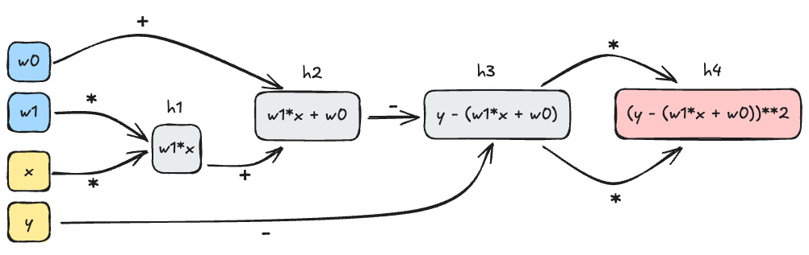
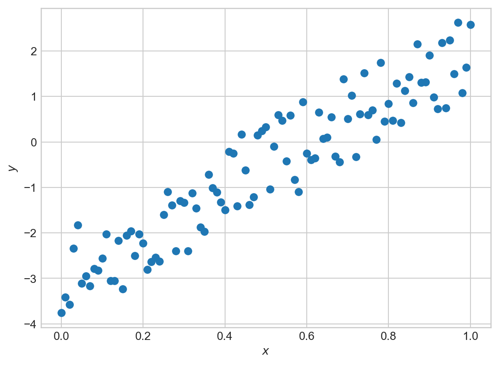

def mse(w, x, y):
return (y - w[1]*x - w[0])**210 Automatic Differentiation
Where do all these gradients come from?
Open the live notebook in Google Colab.
The code presented in this lecture is derived from Boaz Barak’s blog post “Yet Another Backpropagation Tutorial” on his blog Windows on Theory. This code was in turn inspired by the micrograd package developed by Andrej Karpathy.
As we’ve hinted a few times in these notes so far, it is not necessary (or even possible) in modern machine learning to compute the gradients of functions by hand – rather, we can design efficient algorithms to achieve this for us. The computational technology that enables this is called automatic differentiation, sometimes also called autodiff or autograd.
Motivating Example
To get things started, here’s an example of autograd in action. Consider the function
\[ \begin{aligned} \mathrm{MSE}(\mathbf{w}) = (y - w_1x - w_0)^2\;, \end{aligned} \]
which corresponds to the squared error loss for a simple linear regression model with parameters \(\mathbf{w}= (w_0, w_1)\), input \(x\), and target \(y\).
If we wanted to compute the gradient of this function with respect to the parameters \(\mathbf{w}\), we could do so by hand:
\[ \begin{aligned} \frac{\partial f}{\partial w_0} = -2(y - w_1x - w_0)\;,\quad \frac{\partial f}{\partial w_1} = -2x(y - w_1x - w_0)\;. \end{aligned} \tag{10.1}\]
def grad_mse(w, x, y):
return torch.tensor([-2*(y - w[1]*x - w[0]), -2*x*(y - w[1]*x - w[0])])At the point \(\mathbf{w}= (1, 2)\), \(x = 3\), and \(y = 4\), for example, we have
\[ \begin{aligned} \frac{\partial \mathrm{MSE}}{\partial w_0} &= -2(4 - 2\cdot 3 - 1) = -2(-3) = 6\;,\quad \\ \frac{\partial \mathrm{MSE}}{\partial w_1} &= -2\cdot 3(4 - 2\cdot 3 - 1) = -6(-3) = 18\;. \end{aligned} \]
Let’s check:
import torch
w = torch.tensor([1.0, 2.0])
x = 3.0
y = 4.0
grad_mse(w, x, y)tensor([ 6., 18.])Looks good!
The work in this approach was primarily for the human – we had to compute the derivative by hand and then implement the result. Wouldn’t it be nice if we could instead get the derivatives we need without manual implementation? This is where automatic differentiation comes in:
w.requires_grad_()
loss = mse(w, x, y)
loss.backward()
print(w.grad)tensor([ 6., 18.])We were able to find the same result without ever calling the grad_f function.
In the remainder of these notes, we’ll explore what y.backward() does by implementing a simple version of autograd ourselves.
The Computational Graph
The key data structure for autograd is the computational graph.
Definition 10.1 (Computational Graph) The computational graph of a function \(f\) is a directed acyclic graph (DAG) in which the nodes correspond to intermediate values in the computation of \(f\) and the edges correspond to the elementary operations that produce these values.
In the example of the MSE function above, we can decompose the computation into a sequence of operations as follows:
h1 = w[1]*x
h2 = w[0] + h1
h3 = y - h2
h4 = h3*h3Here, the \(h_i\) are the intermediate values in the computation of the MSE function. The computational graph for this function is shown in Figure 10.1.

The key insight of automatic differentiation is that we can store the computational graph alongside the final output of the function, and then use that graph to compute the derivatives we need.
The key idea here is to start from the output node in the computational graph and work backwards. For example, let’s compute the gradient of the MSE function with respect to \(w_0\) and \(w_1\). We’ll start with the output node \(h_4\) and work backwards, using the chain rule as we go.
\[ \begin{aligned} \frac{\partial h_4}{\partial h_3} &= 2h_3 &\quad \text{(since $h_4 = h_3^2$)} \\ \frac{\partial h_4}{\partial h_2} &= \frac{\partial h_4}{\partial h_3}\times \frac{\partial h_3}{\partial h_2} = -2h_3 \times 1 &\quad \text{(since $h_3 = y - h_2$)}\\ \frac{\partial h_4}{\partial h_1} &= \frac{\partial h_4}{\partial h_2}\times \frac{\partial h_2}{\partial h_1} = -2h_3 \times 1 &\quad \text{(since $h_2 = w_0 + h_1$)}\\ \frac{\partial h_4}{\partial w_0} &= \frac{\partial h_4}{\partial h_2}\times \frac{\partial h_2}{\partial w_0} = -2h_3 \times 1 &\quad \text{(since $h_2 = w_0 + h_1$)}\\ \frac{\partial h_4}{\partial w_1} &= \frac{\partial h_4}{\partial h_1}\times \frac{\partial h_1}{\partial w_1} = -2h_3 \times x\;. &\quad \text{(since $h_1 = w_1x$)} \end{aligned} \]
To check these results we just need to plug in the value of \(h_3 = y - h_2 = y - (w_0 + w_1x)\), which matches Equation 10.1. We have just worked our first example of reverse-mode automatic differentiation, which is the most common form of autograd used in machine learning.
Definition 10.2 (Reverse-Mode Automatic Differentiation (Backpropagation)) Reverse-mode automatic differentiation is a family of algorithms which computes the gradient \(\nabla g(\mathbf{w}_0)\) of a function \(g:\mathbb{R}^n\rightarrow \mathbb{R}\) with respect to its inputs \(\mathbf{w}\) at \(\mathbf{w}_0\) by starting from the output node of the computational graph, representing the value \(g(\mathbf{w}_0)\), and working backwards towards the input nodes, applying the chain rule at each step.
The term backpropagation is also sometimes used to refer to reverse-mode automatic differentiation in the context of deep neural networks.
Implementing Autograd
Let’s work on a simple toy implementation of reverse-mode automatic differentiation. Our goal here is to develop enough automatic differentiation that we can run a simple machine learning model from scratch.
The core of our implementation is a Variable class. A Variable has four main jobs:
- It holds a numerical value and a gradient value.
- It remembers the
Variables which were used to compute it, and how they were used in the computation. - It implements a
backward()method which traverses the computational graph backwards from theVariables location. - It implements simple arithmetic operations and the derivative rules corresponding to those operations.
class Variable:
def __init__(self, data, _children = ()):
self.data = data # numerical value stored
self.grad = 0
self._backward = lambda: None
self._prev = set(_children)- 1
-
If this variable is the output variable, then we initialize the
visitedset and set the gradient of this variable to 1, since \(\frac{\partial g}{\partial g} = 1\). - 2
-
Then, we call the
_backward()method for this variable, which will compute the local gradients for this variable and add them to the gradients of the variables inself._prev. - 3
-
Finally, we recursively call
backward()on the variables inself._prevthat haven’t been visited yet.
The remainder of the implementation of the Variable class is just a matter of implementing the arithmetic operations and their corresponding derivative rules. For example, here is the implementation of addition:
def __add__(self, other):
1 other = other if isinstance(other, Variable) else Variable(other)
2 out = Variable(self.data + other.data, (self, other))
3 def _backward():
d_out_d_self = 1
d_out_d_other = 1
self.grad += out.grad*d_out_d_self
other.grad += out.grad*d_out_d_other
out._backward = _backward
return out- 1
-
Type checking. If
otheris not already aVariable, we convert it to aVariablewith the given value and no parents. This allows us to addVariables to constants without having to manually convert the constants toVariables first. - 2
-
We create a new
Variablewhose data holds the correct value for the sum, and whose_prevset contains the two input variables used to construct it. - 3
-
We endow the
outvariable with a_backward()method which, when called, will add the local gradients for this operation to the gradients ofselfandother. In this case, the local gradients are both 1, since \(\frac{\partial (a + b)}{\partial a} = \frac{\partial (a + b)}{\partial b} = 1\).
A key point here is that the gradients of self will be updated when out, the output of the addition operation, calls its backward() method. This means that the value of out.grad can flow to self and other, even though self and other are actually first in the computational graph. This is the sense in which reverse-mode automatic differentiation involves working backwards through the graph.
Here’s another example: multiplication. The implementation is almost the same, except this time we need to use the rules
\[ \begin{aligned} \frac{\partial (ab)}{\partial a} = b\;,\quad \frac{\partial (ab)}{\partial b} = a\;. \end{aligned} \]
to compute the local gradients for the multiplication operation:
def __mul__(self, other):
other = other if isinstance(other, Variable) else Variable(other)
out = Variable(self.data * other.data, (self, other))
def _backward():
d_out_d_self = other.data
d_out_d_other = self.data
self.grad += out.grad * d_out_d_self
other.grad += out.grad * d_out_d_other
out._backward = _backward
return outBefore we are ready to use either of these methods, we need to add them to the Variable class:
Variable.__add__ = __add__
Variable.__mul__ = __mul__It’s also very helpful to implement a few other operations, such as negation, subtraction, and exponentiation.
def __neg__(self):
return self*(-1)
def __sub__(self, other):
return self + (-other)
Variable.__neg__ = __neg__
Variable.__sub__ = __sub__The last key method we need is one to zero out the gradients of a variable, which is necessary before we can call backward() again after an optimization step.
def zero_grad(self):
self.grad = 0
Variable.zero_grad = zero_gradA Quick Check
Let’s just check that our implementation of autograd is working as expected with a quick example:
a = Variable(2.0)
b = Variable(3.0)
c = a*b + a + b
# derivative of c with respect to a is b + 1 = 4
# derivative of c with respect to b is a + 1 = 3
c.backward()
print(a.grad)
print(b.grad) 4.0
3.0Looks good!
Perhaps surprisingly, we are already able to implement linear regression using nothing but base Python and our Variable class. We need to use some slightly unusual syntax because, for example, we have implemented Variable*int but not int*Variable. We’re also relying on list copmrehensions, since we don’t have access to vectorized operations like those provided by NumPy or Torch.
import random
from matplotlib import pyplot as plt
w0_true = -3.0
w1_true = 5.0
x = [Variable(0.01*val) for val in range(101)]
y = [Variable(x[i].data*w1_true + w0_true) + random.uniform(-1, 1) for i in range(101)]Code
fig, ax = plt.subplots()
ax.scatter([xi.data for xi in x], [yi.data for yi in y])
ax.set_xlabel(r'$x$')
t = ax.set_ylabel(r'$y$')
We’re going to construct yet another implementation of linear regression, again with a forward method. This time we’ll use our Variable class to compute the loss and its gradients, and then we’ll update the parameters using gradient descent.
class LinearRegression:
def __init__(self):
self.w0 = Variable(0.0)
self.w1 = Variable(0.0)
# more complicated forward because we don't have access to vectorized operations
def forward(self, x):
return [self.w1*x[i] + self.w0 for i in range(len(x))]We can also implement the mean-squared error. This again is a bit more complicated because we don’t have vectorized operations in our autograd engine.
def mse(y_pred, y):
sum_resid = Variable(0)
for i in range(len(y)):
resid = y_pred[i] - y[i]
sum_resid += resid*resid
return sum_resid * (1/len(y))Now we can also implement a gradient descent optimizer. For the first time in these notes, our gradient descent optimizer does not need to implement grad_func: our hand-implemented automatic differentiation engine will handle that for us.
class GradientDescentOptimizer:
def __init__(self, parameters, lr = 0.01):
self.parameters = parameters
self.lr = lr
def step(self):
for p in self.parameters:
p.data -= self.lr*p.grad
def zero_grad(self):
for p in self.parameters:
p.zero_grad()Now we can train our linear regression model using our autograd implementation and our gradient descent optimizer:
model = LinearRegression()
optimizer = GradientDescentOptimizer([model.w0, model.w1], lr = 0.1)
for epoch in range(1000):
# forward pass
y_pred = model.forward(x)
# compute loss
loss = mse(y_pred, y)
# backward pass
optimizer.zero_grad()
loss.backward()
# update parameters
optimizer.step()Let’s inspect the values we’ve learned:
print(model.w0.data) # should be close to -3
print(model.w1.data) # should be close to 5-3.0244260697489804
5.014102681515602We’ve recovered parameters close to the expected ones, with no manual computation of derivatives! We can also visualize the fit of our model:
Code
fig, ax = plt.subplots()
ax.scatter([xi.data for xi in x], [yi.data for yi in y], label='data')
ax.plot([xi.data for xi in x], [model.w1.data*xi.data + model.w0.data for xi in x], color='black', label='model')
ax.set_xlabel(r'$x$')
ax.set_ylabel(r'$y$')
ax.legend()
Autograd with Torch
We’re now ready to work with autograd in Torch. We can think of torch.Tensors as a much more fully-worked version of the Variable class above, including differentiation rules that work with vectorized operations. This means that the fully idiomatic version of 1D linear regression in Torch would look something like this. The key ingredient here is the requires_grad flag, which tells Torch to store the computational graph for this variable and to compute gradients with respect to it when we call backward().
# linear regression class: very similar
class LinearRegression:
def __init__(self):
self.w0 = torch.tensor(0.0, requires_grad=True)
self.w1 = torch.tensor(0.0, requires_grad=True)
def forward(self, x):
return self.w1*x + self.w0
# mse can be vectorized -- torch will handle the gradients
def mse(y_pred, y):
return torch.mean((y_pred - y)**2)
# x and y need to be converted to tensors for compatibility with autograd
x = torch.Tensor([x[i].data for i in range(len(x))])
y = torch.Tensor([y[i].data for i in range(len(y))])
model = LinearRegression()
# pre-implemented optimization algorithm: we'll see many more of these soon
optimizer = torch.optim.SGD([model.w0, model.w1], lr = 0.1)
for epoch in range(1000):
# forward pass
y_pred = model.forward(x)
# compute loss
loss = mse(y_pred, y)
# backward pass
optimizer.zero_grad()
loss.backward()
# update parameters
optimizer.step()
print(model.w0.data) # should be close to -3
print(model.w1.data) # should be close to 5tensor(-3.0244)
tensor(5.0141)Of course, torch implements a very large number of mathematical operations and their corresponding differentiation rules, which allows us to use its autograd functionality for much more complex models. torch also implements various optimizations that make use of specialized hardware, especially including GPUs.
Now that we have built some understanding of autograd, we are ready to start using it freely. Liberal use of autograd will allow us to begin to consider models of arbitrary complexity, since we won’t have to worry about computing derivatives by hand. This is a key enabler towards deep learning – we can let the complexity of our models outstrip our ability to differentiate through them.
© Phil Chodrow, 2025